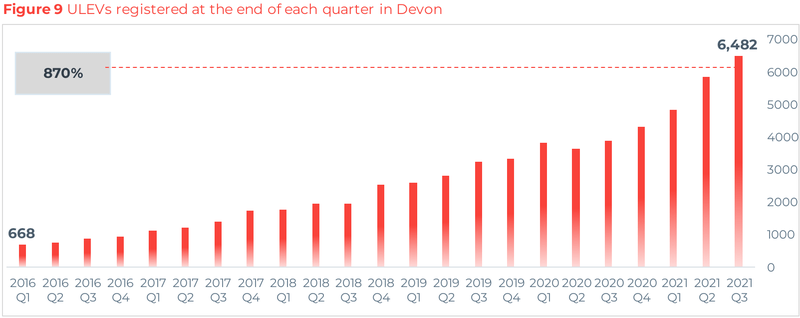
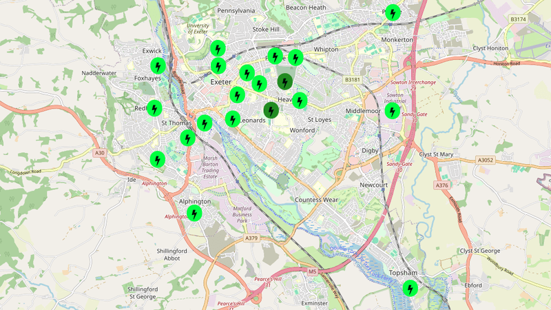

Devon County Council has adopted an electric vehicle charging strategy which aims to meet increased demand for charging points and accelerate electric vehicle uptake “within the context of an overall shift away from the use of the private car”.
The WSP-produced strategy, on which the county council intends to rely to meet its net zero goals as local transport authority, was approved at a meeting of the county council cabinet on Wednesday.
The number of ultra-low emission vehicles (ULEVs), which the government defines as road-using vehicles that are reported to emit less than 75g of carbon dioxide from the tailpipe for every kilometre travelled, is rising across the UK.
Such vehicles include petrol- and diesel-driven hybrids as well as fully electric vehicles. However none are emissions-free, either on a whole-life basis or in use. Significant amounts of particle pollution, in particular, is produced by car tyre wear.
 Devon electric vehicle charging strategy bar chart based on withdrawn figures
The WSP strategy says that the number of private ULEVs in Devon (excluding Plymouth and Torbay, which have their own local transport authorities) increased from 668 in January 2016 to 6,482 in September 2021.
It says a “large proportion” of these vehicles are based in Exeter but does not say how many.
It bases these conclusions on Department for Transport figures that have been withdrawn because their postcode basis is considered inaccurate for this purpose, and which do not include any data beyond the end of 2021.
Replacement Department for Transport statistics show that the number of ULEVs in the Devon local transport authority area actually rose from 618 to 5,984 during this period. The proportion of registered in Exeter rose from 17% of the total in 2016 to nearly 29% in 2021.
The replacement statistics continue for two years beyond the withdrawn figures, to September last year.
The number of ULEVs in Devon more than doubled during these two years to reach 12,883 of which just under 4,000 were registered in Exeter.
The strategy forecasts that the number of electric vehicles in the Devon local transport authority area will exceed petrol and diesel vehicles by 2033.
In September last year there were a total of 621,000 vehicles registered in the area, of which 458,400 were cars, 95,800 vans, 7,300 lorries and 2,500 buses and coaches.
(Plymouth and Torbay add another 226,000 motor vehicles to the county’s roads, and the figures do not include traffic travelling into or through Devon, such as tourists.)
The Devon local transport authority area ULEV ownership rate, at 2%, is much lower than the rate for the UK as whole, across which 3.5% of 41.3 million vehicles were ULEVs in September last year.
The growth in local ULEV ownership is also lagging behind the UK. The WSP strategy nevertheless says that Devon has a higher rate of ULEV ownership than the UK average: six per thousand people (the metric used in the strategy) as opposed to four per thousand.
The Devon local transport authority area ULEV ownership rate was actually 6.6 per thousand in mid-2021, the most recent year for which the ONS has provided full UK population estimates, while the UK ULEV ownership rate was 8.4 per thousand.
The strategy fails to point out that, at the same time Devon had a lower rate of ULEV ownership than the UK average, it had a higher rate of overall motor vehicle ownership.
There are more than 740 vehicles per thousand Devon local transport authority area residents, owned by a population of a little over 800,000 residents living in around 350,000 households, with an average ownership rate of 1.76 vehicles per household.
This compares with 600 vehicles per thousand across the UK as a whole.
However nearly 55,000 of these Devon households did not own a car or van, while nearly 44,000 owned three or more.
The number of cars and vans in the Devon local transport authority area has also increased – by more than 70,000 between 2016 and last year – while the number of buses and coaches has remained the same.
There are now 87,200 motor vehicles registered in Exeter alone.
Not all the vehicles that fall under the government’s ULEV definition require charging points as they run entirely or mostly on petrol or diesel. In the Devon County Council local transport authority area 38% fall into this category.
This means that the 383 publicly-accessible electric vehicle charging points that WSP identified in the county council area as of January 2022, of which 64 were in Exeter, were then supporting a fleet of just over 4,000 exclusively battery-powered electric vehicles.
So there were then 95 publicly-accessible chargers for every thousand battery-powered vehicles.
By September last year, this battery-powered fleet had nearly doubled in size to just under 8,000 vehicles. At the same time the number of publicly-accessible electric vehicle charging points in the area had increased to 528.
But this means the number of publicly-accessible chargers per thousand battery-powered vehicles had fallen to 66.
Only 26% of these chargers were rapid chargers, providing the 50kW and above which can replenish three-quarters of a typical EV battery in less than an hour. The rest take between six and eighteen hours to provide the same charge.
While only around 10% of battery-powered vehicle charging takes place at publicly-accessible charging points, a July 2020 Devon electric vehicle survey found that 34% of battery-powered vehicle users said public chargers were occupied more than half the time.
And 92% of the survey respondents reported that they found charging points were out of order when they wanted to use them.
WSP acknowledges that forecasting battery-powered vehicle adoption rates is difficult given uncertainties around technological developments, behavioural change and government policy, legislation and subsidy levels.
It nevertheless predicts that nearly 29% of Devon County Council local transport authority area vehicles – just under 180,000 if total vehicle ownership numbers remain stable – will be battery-powered by 2030. It describes this as a “mid-range” uptake scenario.
At last year’s provision rate of 66 publicly-accessible chargers per thousand battery-powered vehicles, this would equate with nearly 12,000 chargers. And total Devon vehicle numbers are expected to keep increasing, which would equate to even higher demand.
WSP nevertheless projects a need for just 4,600 publicly-accessible charging points by 2030.
If only 4,600 publicly-accessible charging points were available for use by the 180,000 battery-powered vehicles WSP expects by 2030 there would be fewer than 26 chargers per thousand vehicles in the area.
 Wenea-delivered publicly-accessible charging points in Exeter. Image: Rapid Charging Devon.
Devon County Council has so far installed 70 publicly-accessible charging points in partnership with private provider Wenea. 35 are in Exeter, twenty in Plymouth and 15 distributed across East Devon.
Many provide only 30kW although the Rapid Charging Devon network still describes these as “rapid” chargers.
The county council has also installed 80 charging points in public car parks via a £1.3 million project funded by the European Regional Development Fund.
And it has recently been awarded £7 million of capital funding in the first tranche of the government’s Local Electric Vehicle Infrastructure (LEVI) fund.
It estimates that this will pay for approximately 2,000 publicly-accessible charging points.
Its electric vehicle charging strategy expects the private sector to deliver most of the rest.
The strategy also says it aims to ensure that the transition to battery-powered vehicles is “accessible for all and equitable”, while an accompanying county council officer’s report says that the “price of a new electric vehicle is expected to be the same as a new petrol or diesel car sometime between 2025 and 2027”.
Figures from the AA show that home charging costs less than half as much as petrol per mile driven, but new battery-powered cars are currently more expensive to buy than their fossil fuel equivalents.
Prices are nevertheless falling, and some battery models are reaching price parity with their fossil fuel equivalents on the second-hand market.
However the county council still acknowledges that “those with higher incomes may be better placed to purchase an electric vehicle”, with 38% of the lowest-income households in Devon currently having no access to a car or van of any fuel type.
And there are a range of other issues around the accessibility of electric vehicle ownership that the strategy also acknowledges without supplying ready solutions.
One is the large number of motor vehicle users, including tourists and visitors, who do not have access to off-street parking for charging facilities.
Solutions such as “pavement gullies” may be able to address problems with trailing cables in some locations. But not in many urban areas with little off-street parking provision where it is difficult to find a parking place at all, let alone one in front of your house.
Another significant problem is electricity grid constraints. Western Power Distribution says there is a lack of grid and substation capacity in many parts of Devon, both in rural areas and in urban areas where the mains was installed after the second world war.
When county councillors questioned officers about this issue they were told that the strategy had it covered, but the strategy only says that more investment will be needed without explaining where the money will come from.
The strategy is expected to meet the aims of the Devon Carbon Plan, which aims for a 50% reduction in all production and consumption greenhouse gas emissions by 2030 and to reach net zero by 2050.
However Devon’s emissions increased during 2021 despite a partial pandemic lockdown that suppressed production and consumption activity for the first five months of the year, and the proportion of these emissions that are produced by road transport is rising too.
The electric vehicle charging strategy will also form part of a “suite of documents” that will inform Devon County Council’s new local transport plan, which will cover 2026-2040. This plan is expected to come forward for consultation in March.
The county council says its approach “will ensure future compliance with the government’s expectation that local transport authorities produce local electric charging strategies.”